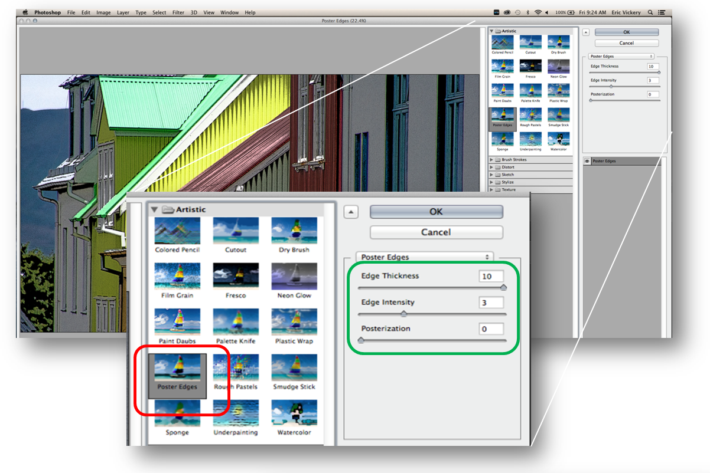
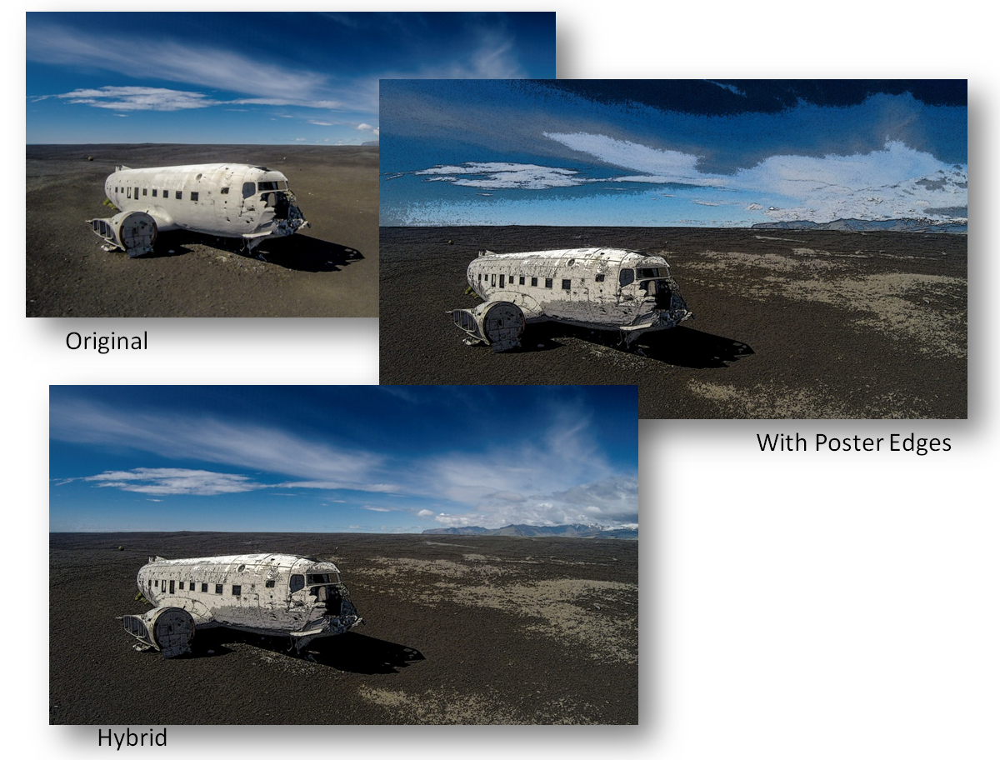

Hi all,
My bad for not getting this out earlier. Please accept my apologies for leaving you with only a few days to play with this technique before the submission deadline for competition
next Thursday.
The technique this month is using the Artistic Filter called “Poster Edges” This highly flexible technique involves applying variable amounts of Posterization and edge control
to a photo to bring out definition and make it look more like an intricate drawing than a photograph.
Start with a photo that has a fair amount of detail that you would like to enhance further and make more illustrative looking. Using the Filter Menu, chose Filter Gallery
and then “Poster Edges” Use the sliders to vary the amount of
Posterization as well as thickness and intensity of the edges. Try lots of variations until you get some you like.

The example below shows the original photo and then with strong Poster Edges and finally a merge of the two with a layer mask to pain out the sky to generate a Hybrid of both.
Let’s see what you can come up with!

Thanks and see you next week!
Eric Vickery